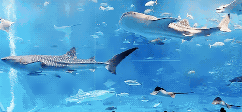

Lorsque vous admirez ce requin ou contemplez une belle raie a Sea Life, il est facile d'oublier que chaque element de ce decor naturel est soigneusement orchestre. Mais qu'arrive-t-il avant que ces creatures ne rejoignent leur habitat de verre ? Plongeons dans les coulisses pour decouvrir les processus qui donnent vie a ces mondes aquatiques.
Les expeditions scientifiques
La capture ou la collecte ?
Certains poissons proviennent de milieux naturels mais toujours dans des conditions strictement encadrées :
- La plongée spécialisée : La plongée spécialisée : Dans certains cas, des plongeurs équipés de filets non traumatisants collectent des spécimens. Ils travaillent tôt le matin ou tard le soir,
- Programmes d’élevage : Dans d’autres cas, les poissons sont directement achetés auprès de fermes spécialisées, où ils ont été élevés en conditions contrôlées.
Dans un bassin partagé par diverses espèces, l'équilibre n'est pas le fruit du hasard, mais le résultat d'une gestion rigoureuse. Les biologistes marins sont essentiels à cette cohabitation, s'appuyant sur des recherches poussées sur le comportement animal, les interactions entre espèces et les besoins environnementaux propres à chacune.